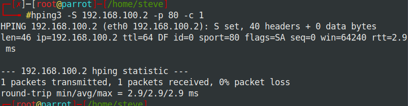

hping is an open-source packet generator and analyzer for the TCP/IP protocol created by Salvatore Sanfilippo (also known as Antirez). It is one of the common tools used for security auditing and testing of firewalls and networks, and was used to exploit the idle scan scanning technique (also invented by the hping author), and now implemented in the Nmap Security Scanner. The new version of hping, hping3, is scriptable using the Tcl language and implements an engine for string based, human-readable description of TCP/IP packets so that the programmer can write scripts related to low level TCP/IP packet manipulation and analysis in a short time
